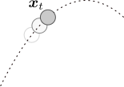
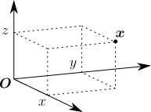
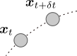
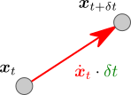
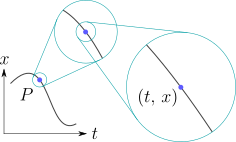
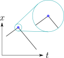
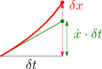
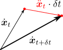
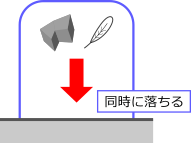

「投げられたボールが
𝑡
秒後に、どの位置
𝒙𝑡
にあるか」を計算したい。このサイトでは、関数を表す際、
𝒙(𝑡)
ではなく
𝒙𝑡
と表すことが多い（式(3)などを見やすくするため）。
𝒙(𝑡)
の形式も場合によっては使う。
ボールの運動 𝒙𝑡 は、初期値(1)と運動方程式から計算できる

キャッチボールをしている場面を想像してみよう。投げられたボールの運動は、投げるたびに異なったものとなるだろう。しかし経験的に分かるように、「同じ投げ方」をすればボールの運動は毎回同じになる（だからこそボールの軌道を予測して捕球できる）。これは非常に興味深いことである。というのも、初期値（＝投げ方）からボールの運動
𝒙𝑡
（＝任意の時刻
𝑡
におけるボールの位置）を一意的に決定する物理法則が存在することを意味しているからである。この物理法則を、（キャッチボールの）運動方程式という。
運動方程式を見つけて
𝒙𝑡
を計算したいのだが、その前にまず、「同じ投げ方」とは何なのかを具体的にしておく必要がある。これは経験的に分かるだろう。即ち、ボールの運動を一意的に決めるためには、以下の3つを固定すればよい：
ボールを…どの位置から投げるかどの方向に投げるかどれくらいの速さで投げるか⎫{
{⎬{
{⎭(1)
とはいえ、これには不満がある。「どの位置から」とか「どの方向に」といった表現は感覚的すぎるのである。今後、何らかの計算を行うためには、これらを
0
や
1.5
といった数字で表す（＝定量化する）必要がある。細かいことを言えば、風やボールの回転による影響があるため、初期値(1)だけではボールの運動が確定しない。しかしここでは、それらの影響は無視できるとしている（例えば十分に重いボールを考える）。
以上をまとめると、ボールの運動
𝒙𝑡
を計算するためには、3つのステップ：「初期値(1)の定量化」、「運動方程式の導出」そして「ボールの運動の計算」の順に考えるのが良さそうである。そこでこの章では、これらをそれぞれの節に分けて議論する：1.1初期値(1)の定量化1.2運動方程式の導出1.3運動方程式(15)の解
1.1初期値(1)の定量化
この節では、初期値(1)の定量化を行う。「どこから投げるか」は位置ベクトル
𝒙0
（式(2)）で表され、残りの2つ「方向と速さ」は速度ベクトル
˙𝒙0
（式(4)）で表される。
1.1.1「どこから投げるか」は、デカルト座標で表す：式(2)
まず、初期値(1)の1つ目「どこから投げるか」である。これは単に、
𝑡=0
でのボールの位置
𝒙0
である。従って、ボールの位置を定量化する方法を与えればよい。

これは特に問題ないだろう。即ち、慣れ親しんだデカルト座標を使えばよい。具体的には右図のように、ボールの位置
𝒙
を、「原点
𝑶
から
𝑥
軸方向に
𝑥[m]
、
𝑦
軸方向に
𝑦[m]
、
𝑧
軸方向に
𝑧[m]
」という三つ組のベクトル：
𝒙=⎡⎢
⎢⎣𝑥𝑦𝑧⎤⎥
⎥⎦
によって表すわけである。（あらかじめ「原点
𝑶
」および「互いに直交する
𝑥,𝑦,𝑧
軸」を適当に取っておく。）この
𝒙
のように、太字の変数はベクトルを表すものとする。
結局、「ボールをどこから投げるか」は、デカルト座標により
𝒙0(2)
と表すことができる。この章の冒頭でも、投げてから
𝑡
秒後のボールの位置を
𝒙𝑡
と書いていたが、これについてもデカルト座標で表されているとする。もちろん、デカルト座標以外の座標系を使ってもよい。例えば、振り子の場合、振れ角によって重りの位置を表してもよい。そのような例は第9章で扱う。
1.1.2「投げる方向と速さ」は、速度ベクトル(4)で表される
次は、初期値(1)の残りの2つ：「投げる方向」と「投げる速さ」を定量化する方法である。投げる「方向」については、その方向を向くベクトルで表現できそうだが、「速さ」については自明ではない。注目するのは、ボールの運動方向や速さを知るには、ごく短い間だけでも、ボールの運動を観察しなければならないという事実である。例えば、ボールの「運動方向や速さ」を、撮影された写真から判断しようとする時、1枚の写真だけでは駄目で、連続する複数の写真が必要となることからも分かるだろう。連続する写真（右下図）における位置の「変化の方向」から運動の方向が、「とびの大きさ」から速さが分かる。

そこで、右図のように、微小時間
𝛿𝑡
秒の測定で得られたボール位置
𝒙𝑡,𝒙𝑡+𝛿𝑡
をもとに、「ボールの方向と速さ」を定量的に得る方法を探ろう。
まず、
𝛿𝑡
は非常に小さいので、この間の運動は直線的（＝
𝒙𝑡+𝛿𝑡
が
𝛿𝑡
の1次関数）であるとみなせる。即ち、
𝛿𝑡
の係数を
˙𝒙𝑡
とおいて、
𝒙𝑡+𝛿𝑡
は以下の形で近似できる：
𝒙𝑡+𝛿𝑡≐𝒙𝑡+˙𝒙𝑡⋅𝛿𝑡(3)
（詳しくは以下の【1.1-注1】の式(6)参照。）左辺
𝒙𝑡+𝛿𝑡
は、右辺にある2つの量
𝒙𝑡
と
˙𝒙𝑡
から決まるわけだが、
𝒙𝑡
は測定開始時刻
𝑡
でのボールの位置なので、
𝒙𝑡+𝛿𝑡
を測定することで新たに得られる情報は、もう一方の
˙𝒙𝑡
ということになる。よって、「運動の方向と速さ」は、
˙𝒙𝑡
に含まれているはずである。

そこで、
˙𝒙𝑡
がどのような量なのか、詳しく見てみよう。まず、上式(3)の赤字部分は、
𝛿𝑡
秒間にボールが
𝒙𝑡
からどれだけ移動したかを表すベクトルである（右図の赤矢印部分）。よって、
˙𝒙𝑡
の向きは、運動方向に等しい。また、赤字部分の大きさ
|˙𝒙𝑡|⋅𝛿𝑡
は、「
𝛿𝑡
秒間での移動距離」なので、公式「移動距離=速さ・時間」と見比べれば、ベクトルの大きさ
|˙𝒙𝑡|
は、時刻
𝑡
でのボールの速さに等しいことが分かる。つまり、
˙𝒙𝑡
は、「ボールの運動方向を向き、大きさが運動の速さに一致する」ベクトルであり、まさに「運動の方向と速さ」を過不足なく持っている。この
˙𝒙𝑡
を速度ベクトル（あるいは単に速度）という。
以上により、「投げる方向と速さ」は、
𝑡=0
における速度ベクトル：
˙𝒙0(4)
で表されることになる。非常にきれいな結果が得られたので、運動方程式についても簡潔に書けるのではないかという期待が持てる。なお、実際に
˙𝒙0
を測定するには、
𝑡=0
近傍での微小時間の観測を行って
𝒙0,𝒙0+𝛿𝑡
を特定し、式(3)を用いればよい。
【1.1-注1】関数の1次近似：式(5)，式(6)

変数
𝑡
の任意の関数
𝑥𝑡
に対し、
𝑡 - 𝑥
グラフを描いてみる。このグラフ上の任意の1点
𝑃=(𝑡,𝑥)
の近傍を拡大していくと、右図のように、直線に近づいていく[1]。直線は1次関数で表すことができるので、
𝛿𝑡
が十分小さければ（＝点
𝑃
の近傍では）、
𝑥𝑡+𝛿𝑡
は
𝛿𝑡
の1次関数として近似できる：
𝑥𝑡+𝛿𝑡≐𝑥𝑡+˙𝑥𝑡⋅𝛿𝑡(5)
この式(5)を1次近似と言い、
≐
は1次近似であることを表す。
𝛿𝑡
の係数
˙𝑥𝑡
（＝点
𝑃
における接線の傾き）、または、
˙𝑥𝑡
を求める操作を微分という[2]。
ベクトル値関数
𝒙𝑡
についても、成分ごとに上式(5)を適用すれば1次近似できる：
𝒙𝑡+𝛿𝑡=⎡⎢
⎢⎣𝑥𝑡+𝛿𝑡𝑦𝑡+𝛿𝑡𝑧𝑡+𝛿𝑡⎤⎥
⎥⎦≐⎡⎢
⎢⎣𝑥𝑡+˙𝑥𝑡⋅𝛿𝑡𝑦𝑡+˙𝑦𝑡⋅𝛿𝑡𝑧𝑡+˙𝑧𝑡⋅𝛿𝑡⎤⎥
⎥⎦=𝒙𝑡+˙𝒙𝑡⋅𝛿𝑡(6)
˙𝒙𝑡
は、
𝒙𝑡
の各成分を微分したものである。
補足

[1] グラフ曲線が三角定規の角のように角ばっている場合（右図）、その点の付近をいくら拡大していっても、角ばったままで直線に近づかない。従って、その点では1次近似はできない。このようなことが起きるのは、「壁と衝突するボールの運動」の軌跡のように、瞬間的に運動の向きが変わる場合である。キャッチボールの運動の場合、このような角ばった軌道にはならないので、常に1次近似できる。

[2]
˙𝑥
を求めるには、
𝑥
の変化量
𝛿𝑥≡𝑥𝑡+𝛿𝑡−𝑥𝑡
を使って、1次近似式(5)を書き直すと見通しが良い（右図）：
𝛿𝑥≐˙𝑥⋅𝛿𝑡(7)
𝛿𝑥
が
𝛿𝑡
に近似的に比例し、その傾きが微分係数
˙𝑥
となるわけである（式(5)よりもイメージしやすいため、式(7)の形も今後よく使う）。
˙𝑥
を得るには、この式の両辺を
𝛿𝑡
で割った後、
𝛿𝑡→0
の極限をとればよい：
˙𝑥=lim𝛿𝑡→0𝛿𝑥𝛿𝑡(8)
1.2運動方程式の導出
前節では、初期位置
𝒙0
と初期速度
˙𝒙0
を決めれば、その後のボールの運動
𝒙𝑡
が一意的に決まることを見た。この状況を模式的に表すと以下のようになる：
𝒙0,˙𝒙0「時間を𝑡秒進める法則」←←←←←←←←←←←←←←←←←←←←←←←←←←→𝒙𝑡(9)
この節では、「時間を
𝑡
秒進める法則」、即ち、運動方程式(15)を書き下す。
1.2.1ボールの運動は、加速度ベクトル(12)によって決まる
式(9)の肝である「時間を
𝑡
秒進める法則」を求めたい。そのためにまず、初期時刻を
𝑡
として、非常に小さな値
𝛿𝑡
だけ時間を進めることを考える：
𝒙𝑡,˙𝒙𝑡「時間を𝛿𝑡秒進める法則」←←←←←←←←←←←←←←←←←←←←←←←←←←←→𝒙𝑡+𝛿𝑡,˙𝒙𝑡+𝛿𝑡(10)
両辺を対称にするため、右辺にも速度
˙𝒙
を加えた。これは、「
𝒙
の関数形が決まっている→その時間微分
˙𝒙
も決まる」ことから正当化できる。これを漸化式の要領で連続して使用すれば、
𝑡=0
から始めて
𝛿𝑡
ずつ、任意の時刻まで進めることができる。よって、「時間を
𝛿𝑡
秒進める法則」が分かれば、式(9)についても理解したことになる。

さて、なぜ微小時間をｓ考えているかというと、前節で有効だった1次近似がここでも上手くいくことを期待しているからである。実際、式(10)の右辺を1次近似すると、式(3)の要領で以下のようになる：
𝒙𝑡+𝛿𝑡≐𝒙𝑡+˙𝒙𝑡⋅𝛿𝑡˙𝒙𝑡+𝛿𝑡≐˙𝒙𝑡+¨𝒙𝑡⋅𝛿𝑡}(11)
この式の右辺の未知数は
¨𝒙
のみである（それ以外の
𝒙𝑡,˙𝒙𝑡
は式(10)の左辺として与えられている）。
¨𝒙
は、速度ベクトル
˙𝒙
の時間微分、即ち、速度の変化率＝右上図のように、微小時間間隔
𝛿𝑡
を掛けると、
𝛿𝑡
秒間での速度の変化量になるような量である。
¨𝒙
を、加速度ベクトル（または単に加速度）と言う。
よって結局、ボールの運動を決めるのに必要な量は、任意の時刻
𝑡
における加速度ベクトル
¨𝒙𝑡(12)
ということになる。そうすれば、漸化式(11)によって1ステップずつ、任意の時刻まで時間を進めていくことができる（「積分する」という）。
なお、式(11)は近似式なので、等式と見なして時間を進めていくと誤差が生じる。よって、刻み幅
𝛿𝑡
を小さくしていった時に、任意の時刻
𝑡
での誤差
𝐸
がゼロになることを言う必要がある。直感的に言うと、
𝐸
は
𝐸∽(ステップ数𝑛)×(1ステップあたりの誤差𝑒)∣
∣
∣
∣
∣・𝑡=𝑛𝛿𝑡より、𝑛∝1𝛿𝑡・以下の【1.2-注1】より、𝑒∝(𝛿𝑡)2∝𝛿𝑡
程度の量となる。よって、
𝛿𝑡→0
の極限で
𝐸→0
となる。ただしこの説明では、1ステップでの誤差が次のステップで増幅されていく可能性が考慮されていないので不十分である。厳密に議論しても同じ結論になるのだが、それは第3章で行う。
【1.2-注1】1次近似の誤差は (𝛿𝑡)2 程度の量である
1次近似
𝛿𝑥≐˙𝑥⋅𝛿𝑡
（式(7)）の誤差
𝑒≡𝛿𝑥−˙𝑥⋅𝛿𝑡(13)
は、
𝛿𝑡→0
としたとき、
𝛿𝑡
よりも早くゼロになる：
lim𝛿𝑡→0𝑒𝛿𝑡=0(14)
この式は、直感的には、
𝛿𝑡
が十分小さい時、
𝑒∝(𝛿𝑡)2
程度の量になるということである。実際、多項式
𝑒=𝑎+𝑏(𝛿𝑡)+𝑐(𝛿𝑡)2+⋯
の形を仮定して上式(14)に代入してみると、
𝑎=𝑏=0
となる。
(𝛿𝑡)3
以降の項は、
𝛿𝑡
が小さければ、
(𝛿𝑡)2
に比べて小さいので効かない。因みに、「任意の連続関数は多項式でいくらでも精度良く近似できる」という定理（ワイエルシュトラスの多項式近似定理）が成り立つので、多項式を仮定するのは悪くない。
導出
式(13)の両辺を
𝛿𝑡
で割って
𝛿𝑡→0
の極限をとると
lim𝛿𝑡→0𝑒𝛿𝑡=lim𝛿𝑡→0𝛿𝑥−˙𝑥⋅𝛿𝑡𝛿𝑡=lim𝛿𝑡→0𝛿𝑥𝛿𝑡−˙𝑥∣微分の公式(8)=0◼
1.2.2キャッチボールの運動方程式：式(15)
後は、加速度
¨𝒙
を決定するだけである。単純な例として、重力のない宇宙空間では
¨𝒙=0
である。なぜなら、ボールは一定の速度で進み続けるため、式(11)の第2式が
˙𝒙𝑡+𝛿𝑡=˙𝒙𝑡
となるからである。
¨𝒙
がどのような法則に従うかを見出すには、実際に様々な初期値・時刻のもとで
¨𝒙
を測定してみればよい。測定によって
¨𝒙
の値を求めるには、短い時間間隔で位置
𝒙
をで3回測定して、以下の【1.2-注2】の式(16)を使えばよい。
実際にそのような測定が行われ、その結果、
¨𝒙
は、重力加速度と呼ばれるある一定の値
𝒈
となることが知られている（以下の【1.2-注3】）：
¨𝒙𝑡=𝒈(15)
（ボールは下向きに加速するのだから、
𝒈
は下方向を向くベクトル。）これが求めたかった運動方程式である。
以上により、初期値
𝒙0,˙𝒙0
が与えられれば、運動方程式(15)によって、任意の時刻
𝑡
でのボールの位置
𝒙𝑡
が決まることになる。ボールの素材は無数に考えられるが、それら運動は全てこの1つの単純な運動方程式に支配されているのである（空気抵抗は無視している）。ボールの運動の違いは、初期値が異なることに起因する。
【1.2-注2】加速度ベクトル ¨𝒙𝑡 の測定
3つの時刻での位置ベクトル
𝒙𝑡,𝒙𝑡+𝛿𝑡,𝒙𝑡+2𝛿𝑡
を測定する（
𝛿𝑡
はなるべく小さな値）。これらの測定値から
¨𝒙𝑡
は以下のように求まる。
¨𝒙𝑡≈𝒙𝑡+2𝛿𝑡−2𝒙𝑡+𝛿𝑡+𝒙𝑡𝛿𝑡2(16)
導出
まず、速度ベクトル
˙𝒙𝑡,˙𝒙𝑡+𝛿𝑡
は、以下のように決まる：（1次近似式(11)の第1式を
˙𝒙𝑡≈[⋯]
の形に変形したもの）
˙𝒙𝑡≈𝒙𝑡+𝛿𝑡−𝒙𝑡𝛿𝑡˙𝒙𝑡+𝛿𝑡≈𝒙𝑡+2𝛿𝑡−𝒙𝑡+𝛿𝑡𝛿𝑡
これらを、加速度ベクトル
¨𝒙𝑡
：（同第2式を
¨𝒙𝑡≈[⋯]
の形に変形したもの）
¨𝒙𝑡≈˙𝒙𝑡+𝛿𝑡−˙𝒙𝑡𝛿𝑡
に代入すると、与式(16)になる。
◼
なお、実際には、式(16)のように
𝑡,𝑡+𝛿𝑡,𝑡+2𝛿𝑡
の値を使うよりも、
𝑡,𝑡±𝛿𝑡
での値を用いた以下の式のほうが精度は良い（中心差分という）：
¨𝒙𝑡≈𝒙𝑡+𝛿𝑡−2𝒙𝑡+𝒙𝑡−𝛿𝑡𝛿𝑡2
【1.2-注3】重力加速度 𝒈
放り投げられた物体は、その物体が何であるかによらず[1]、一定の加速度
𝒈
を受ける。その値は、鉛直下向きで大きさが約
9.8m/s2
である[2]。成分で書くと
𝒈≈⎡⎢
⎢⎣0m/s20m/s2−9.8m/s2⎤⎥
⎥⎦
となる（
𝑧
軸を鉛直上向き方向にとっている）。
𝒈
を重力加速度という。

[1] この性質をガリレイの等価原理と言う。重さや密度にも依存しないことに注意。羽はゆっくり落ちるし、ヘリウム風船は逆に浮き上がってしまうので、成り立っていないように直感的には見えるが、これは空気抵抗や空気の浮力のためである。真空中であれば石などと同じように落ちる。[2]
𝒈
がこの値を取るのは、地球上での話である。例えば、月の上だともっと小さな値になるし、星から遠く離れた重力の働かない宇宙空間だと
𝟎
になるだろう。（地球上であっても場所によって0.5%程度の違いがある。）
1.3運動方程式(15)の解
ここまでの議論により、初期位置
𝒙0
・初期速度
˙𝒙0
が与えられれば、運動方程式(15)：（再掲）
¨𝒙𝑡=𝒈(17)
を解くことで、任意の時刻
𝑡
での位置
𝒙𝑡
が分かる。
この節では、式(17)の解として、数値解と解析解について述べる：
「数値解」＝コンピュータを用いて計算する近似的な解「解析解」＝数学的に厳密な解
「数値解」は、様々な場面で一般的に使える手法だが、近似値なので、誤差が許容範囲内か考慮する必要がある。（数値解以外の部分でも誤差は発生する。例えば、実験における「初期値の測定誤差」や空気抵抗を無視するといった「単純化による誤差」も考慮すべきである。）「解析解」は、誤差を含まない厳密な解だが、問題に応じて解法が異なり、そもそもほとんどの場合、求められない。
1.3.1数値解
数値的に運動方程式(17)を解くには、上述の1次近似式(11)を使って逐次的に計算を進めていけばよい。即ち、以下の漸化式：（
𝒙,˙𝒙
を1つのベクトルにまとめた）
[𝒙˙𝒙]𝑡+𝛿𝑡≐[𝒙˙𝒙]𝑡+[˙𝒙𝒈]𝑡⋅𝛿𝑡(18)
を用いて、
𝑡=0
から始めて
𝛿𝑡
ずつ進めていけばよい。
𝛿𝑡
を小さくしていけば精度が良くなる。（前節でも述べたが、数学的な正当化は第3章で行う。）このように、「いきなり大きな時間幅を考えるのは難しいので、微小な時間幅
𝛿𝑡
を考えることで簡単な関係式を探す」というのが微分の考えであり、「そうして得られた関係式(18)を繋いでいって大きな時間幅での結果を得る」というのが積分の考え方である。このように、微分と積分はペアとなっており、今後も時間発展を計算する際には、微分形の方程式→積分というロジックを考えることになる。
実際に数値計算を行うと、右図のようになる。グリッドの間隔は
1m
である。
1.3.2解析解：式(19)
運動方程式(17)の解
𝒙𝑡
は、解析的に示すこともできる。実際、初期値
𝒙0,˙𝒙0
を用いて
𝒙𝑡=𝒙0+𝑡˙𝒙0+12𝑡2𝒈(19)
となる。この式は確かに、
𝑡=0
における初期条件「
𝒙𝑡=0=𝒙0
および
˙𝒙𝑡=0=˙𝒙0
」が成立し、任意の
𝑡
において運動方程式
¨𝒙𝑡=𝒈
を満たしている。ボールの運動は時刻
𝑡
の2次関数であることが、式(19)から分かる。これは上述の数値解法では分からなかった性質である。このように、解析解のほうが得られる情報は多い。ただし、前述のように、一部の単純な場合を除いて、解析解の導出は困難である。逆に、数値解法は汎用性がある。【式(19)の導出の概要】まず、運動方程式
¨𝒙=𝒈
より、
𝒙
を2階微分すると定数
𝒈
になるのだから、
𝒙
は
𝑡
の2次関数になるはずである：（
𝒂,𝒃,𝒄
は定数）
𝒙𝑡=𝒂+𝑡𝒃+𝑡2𝒄
後は、初期値条件
𝒙𝑡=0=𝒙0
および
˙𝒙𝑡=0=˙𝒙0
と、運動方程式
¨𝒙=𝒈
を満たすように
𝒂,𝒃,𝒄
を求めると、一意的に解(19)が得られる。
◼